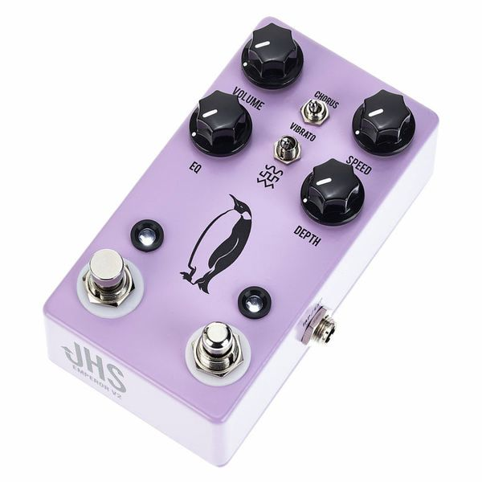

⚡ Pas le temps : le résumé 30 secondes
- 🎯 IK TONEX Pedal (~300 €) — la porte d'entrée. Capture ton ampli en quelques minutes.
- 👑 Neural DSP Quad Cortex Mini (~1300 €) — la référence miniaturisée. Remplace un rig entier.
- 🎚️ Boss XS-100 (~360 €) — le pitch shifting polyphonique le plus propre du marché.
- 🧪 Polyend Endless (~400 €) — l'IA générative : tu décris l'effet en texte, l'algo le crée.
En 1997, Auto-Tune faisait scandale dans les studios — les puristes criaient à la trahison, Cher en faisait un hit planétaire avec Believe. Vingt-huit ans plus tard, l'algorithme a envahi le pedalboard. Sauf que cette fois, la machine ne corrige pas : elle apprend.
Le NAMM 2026 a été le grand oral de cette révolution silencieuse. Neural DSP a présenté le Quad Cortex Mini avec Neural Capture V2, IK Multimedia a affiné son TONEX Pedal avec une bibliothèque de plus de 6000 modèles, Boss a repoussé les limites du traitement polyphonique. Si tu débutes, note quand même que les bases restent les bases — ces pédales s'adressent à des joueurs qui savent déjà ce qu'ils cherchent.
🧬 Comment ces pédales « pensent »
1 — Capture / Profiling
La pédale envoie un signal de test (sweep de sinus ou bruit blanc) dans ton ampli. Elle enregistre la réponse et compare sortie/entrée pour cartographier toutes les non-linéarités : saturation, compression naturelle, résonances.
2 — Entraînement du réseau de neurones
Un réseau de neurones s'entraîne sur cette empreinte — souvent dans le cloud (Cortex Cloud chez Neural DSP, ToneNET chez IK). En quelques minutes, le modèle apprend à reproduire les comportements dynamiques de l'original, y compris la réponse au toucher.
3 — Inférence en temps réel
Sur scène, le DSP fait tourner ce modèle avec une latence inférieure à 3 ms — imperceptible au jeu. La puissance de calcul requise était impossible dans un stompbox il y a cinq ans.
4 — IA générative (nouveau)
La dernière frontière : tu décris l'effet que tu veux en texte (« un chorus granulaire qui flotte comme du Marvin Gaye dans du brouillard ») et l'algorithme génère le traitement DSP correspondant.
Les 4 pédales IA qui changent tout

2023–2026 · Le pionnier accessible · ~280–320 €
TONEX Pedal
IK Multimedia
La porte d'entrée la plus accessible de la révolution IA. Son moteur de machine learning capture l'empreinte exacte de n'importe quel ampli ou pédale en quelques minutes via l'application TONEX. Livré avec 150 presets premium et l'accès à la bibliothèque communautaire ToneNET.
🎸 Qui l'utilise ?
Nile Rodgers — le dieu du funk a expérimenté la capture numérique pour préserver le son de ses Stratocasters vintage. John Mayer s'est publiquement intéressé aux technologies de capture pour ses rigs de tournée.

2026 · La référence miniaturisée · ~1250–1350 €
Quad Cortex Mini
Neural DSP · CorOS 4.0
Neural DSP a réussi l'impossible au NAMM 2026 : faire tenir la puissance totale du Quad Cortex dans un format réduit de 50 %. Le Mini embarque CorOS 4.0 et la Neural Capture V2, qui s'entraîne dans le cloud avec des modèles de deep learning.
🎸 Qui l'utilise ?
Tim Henson (Polyphia) — utilisateur Quad Cortex depuis le début, il incarne la génération qui n'a jamais possédé un ampli à lampes et s'en moque. Plini — le sorcier prog australien l'utilise pour capturer son Bogner Ecstasy et l'emporter partout.

2025 · DSP polyphonique de précision · ~340–380 €
XS-100 Poly Shifter
Boss
Le XS-100 n'est pas une « IA capture » au sens strict, mais son algorithme de traitement polyphonique en temps réel représente l'aboutissement de décennies de recherche DSP chez Boss. 8 octaves de pitch shifting polyphonique, 30 mémoires, écran intégré.
🎸 Qui l'utilise ?
Tom Morello — l'architecte du bruit de Rage Against The Machine est un utilisateur historique de pitch shifting radical. Jack White — ses détours harmoniques et ses runs d'une octave en plein set live sont exactement le terrain de jeu du XS-100.

2025–2026 · L'IA générative en stompbox · ~380–430 €
Endless
Polyend
La pédale la plus radicalement nouvelle de cette sélection. Un processeur d'effets open source et programmable qui intègre un générateur d'effets par description textuelle : tu tapes ce que tu veux entendre, l'algorithme génère le code DSP correspondant.
🎸 Qui l'utilise ?
Jonny Greenwood (Radiohead) — le roi de l'effet improbable, qui a construit sa carrière sur la dérive sonore, aurait adoré cet outil. St. Vincent — architecte d'un son immédiatement reconnaissable, elle incarne cette approche de l'effet comme matière sculptable.